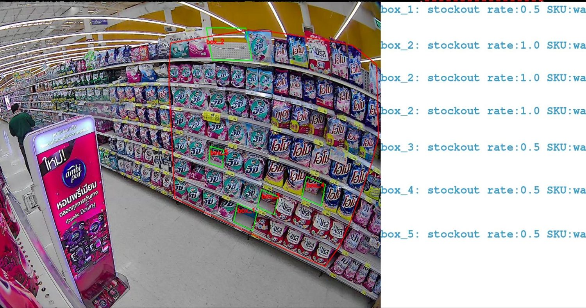
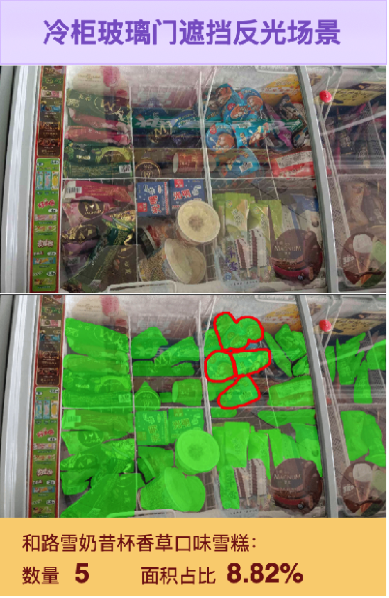

How FMCG brands stay undefeated in the prime shelf-space battle.
Winning the shelf means seeing it. AIMALL gives beverage and FMCG brands a live view of execution across every store.

For FMCG and beverage brands, it comes down to the shelf. They pay for prime facings, end-caps and promotions, then have to hope the plan actually holds up across thousands of stores.
Field teams could only get to so many shops, and their reports were a snapshot at best. Brands were mostly guessing: paying for displays they couldn't check, and losing shelf space to competitors between visits.
You can't win a shelf you can't see
On-shelf availability, share of shelf, golden-zone ratio, facings per SKU. The numbers that drive sales are the ones a manual audit gets slowly and unevenly, and it's worse on busy multi-brand shelves and behind freezer glass.
SnapX gives them a live read
With SnapX, brands could finally see execution as it happened. A rep photographs the shelf and gets back on-shelf availability, share of shelf, golden-zone ratio and where competitors are sitting. It even reads through freezer glass and messy displays, which no one else in China does, across more than 20 supermarket chains.
“For once we could actually prove what was on the shelf, store by store.”

The results
Coverage went up 20%, audits got 90% more efficient, and store execution rose 60%. Brands stopped guessing and started running the shelf as carefully as they run the supply chain.
See what AIMALL can do for you
Share your scenario and our team will craft a rollout plan for your stores.
Get a Solution